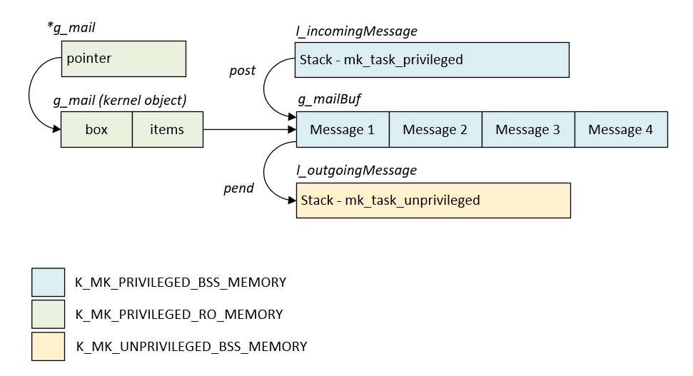
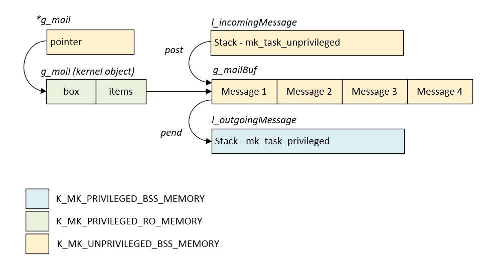

Protéger son programme avec Mk
Mk offre un ensemble de mécanismes pour protéger un programme. Cet article présente la méthodologie à utiliser pour déclarer et placer ses variables en mémoire, créer des tâches privilégiées, partager des données et gérer les erreurs de permissions. Il fait directement suite à l'article précédent Le modèle de protection de Mk.
1. Déclarer et protéger ses variables
Dans un programme informatique, les variables globales et statiques sont positionnées par défaut dans les sections .bss, .data et .rodata. Mk configure ces sections de la manière suivante dans le fichier d'édition de liens :
| Section | Contenu | Mémoire | MPU | Privilégié / Non privilégié | Exécution |
|---|---|---|---|---|---|
| .rodata | Constantes | FLASH_ |
2 | RW* / RO | Autorisée |
| .bss | Variables non initialisées privilégiées | DTCM_ |
3 | RW / Aucun accès | Interdite |
| .data | Variables initialisées privilégiées | DTCM_ |
3 | RW / Aucun accès | Interdite |
*L'attribut 'write' de la section .rodata est sans effet lorsque celle-ci est positionnée dans une mémoire FLASH.
L'extrait de code ci-dessous montre un exemple de déclaration dans chacune de ces sections :
/* Déclaration d'une variable dans la section .rodata */ const uint32_t g_rodata = 0x12345678 ; /* Déclaration d'une variable dans la section .data */ uint32_t g_data = 5 ; /* Déclaration de 2 variables dans la section .bss */ uint32_t g_bss1 = 0 ; uint32_t g_bss2; /* Une tâche privilégiée */ void mk_task_privileged ( T_mkAddr p_param ) { /* Déclaration d'une variable statique dans la section .data */ static uint32_t s_data = 6 ; /* Déclaration d'une variable dans la pile de la tâche privilégiée */ uint32_t l_stack = 6 ; /* ... */ }
Du fait des attributs de la MPU (aucun accès autorisé pour .bss et .data), les tâches non privilégiées ne peuvent pas accéder à ces variables en lecture et en écriture. Elles doivent donc déclarer leurs variables avec un attribut spécifique afin de les localiser dans la bonne section :
| Section | Contenu | Mémoire | MPU | Privilégié / Non privilégié | Exécution |
|---|---|---|---|---|---|
| .mk_ |
Variables non initialisées non privilégiées | SRAM1 | 4 | RW / RW | Interdite |
| .mk_ |
Variables initialisées non privilégiées | SRAM1 | 4 | RW / RW | Interdite |
L'extrait de code ci-dessous montre une déclaration dans les sections non privilégiées :
/* Déclaration d'une variable dans la section .mk_unprivileged_data_memory */ K_MK_UNPRIVILEGED_DATA_MEMORY uint32_t g_data = 5 ; /* Déclaration d'une variable dans la section .mk_unprivileged_bss_memory */ K_MK_UNPRIVILEGED_BSS_MEMORY uint32_t g_bss; /* Une tâche non privilégiée */ void mk_task_unprivileged ( T_mkAddr p_param ) { /* Déclaration d'une variable statique */ /* dans la section .mk_unprivileged_data_memory */ K_MK_UNPRIVILEGED_DATA_MEMORY static uint32_t s_data = 6 ; /* Déclaration d'une variable dans la pile de la tâche non privilégiée */ uint32_t l_stack = 6 ; /* ... */ }
En addition, le noyau offre deux macros supplémentaires afin d'allouer un buffer DMA ou un bloc mémoire partiellement partagé (RW/RO) :
| Section | Contenu | Mémoire | MPU | Privilégié / Non privilégié | Exécution |
|---|---|---|---|---|---|
| .mk_ |
Données DMA privilégiées | SRAM1 | 1 | RW / Aucun accès | Interdite |
| .mk_ |
Données privilégiées partagées en lecture | SRAM2 | 6 | RW / RO | Interdite |
À l'instar des sections de type .bss, ces zones mémoire sont initialisées à la valeur nulle par le code de démarrage. On les utilise de la manière suivante :
/* Déclaration d'une variable dans la section .mk_privileged_dma_memory */ /* Les accès au cache sont désactivés pour conserver une cohérence */ /* entre le CPU et la DMA */ K_MK_PRIVILEGED_DMA_MEMORY uint32_t g_dmaBuf [ 512 ]; /* Déclaration d'une variable dans la section .mk_privileged_ro_memory */ /* Les tâches privilégiées peuvent lire et écrire dans cette variable */ /* Les tâches non privilégiées peuvent seulement lire */ K_MK_PRIVILEGED_RO_MEMORY uint32_t g_shared;
Lors de l'écriture d'un programme, il est important d'avoir conscience des règles ci-dessous :
⚠️
Une variable globale ou statique déclarée sans macro est placée dans les sections .bss ou .data. Elle est donc inaccessible aux tâches non privilégiées. Une tâche non privilégiée qui la manipule provoque une exception MemManageFault.
⚠️
Une variable globale ou statique déclarée avec le mot clé "const" est placée dans la section .rodata. Elle n'est accessible qu'en lecture (tâches privilégiées et non privilégiées).
⚠️
Une variable locale déclarée dans une fonction est placée dans la pile de la tâche qui exécute cette fonction.
⚠️
Les sections .mk_
2. Créer des tâches privilégiées
Une tâche privilégiée est créée en utilisant la fonction mk_task_create et en spécifiant l'attribut K_MK_TYPE_PRIVILEGED lors de la configuration de la structure T_mkTaskCtrlBlock.
/* Déclaration du buffer où sera stockée la pile de la tâche */ /* Celui-ci est positionné dans une zone privilégiée */ K_MK_PRIVILEGED_BSS_MEMORY uint32_t g_privilegedStackBuf [ 512 ]; /* Une tâche privilégiée quelconque */ void mk_task_myPrivilegedTask ( T_mkAddr p_param ) { /* Déclaration de la variable de retour */ T_mkCode l_result; /* Déclaration d'un pointeur de tâche */ T_mkTask* l_task; /* Déclaration d'une structure contenant les informations de la stack */ T_mkStack l_stack; /* Déclaration d'une structure contenant les informations de la tâche */ T_mkTaskCtrlBlock l_taskCtrlBlock; /* Configuration de la structure l_stack avec les attributs de la pile */ l_result = mk_stack_create ( &l_stack, K_MK_TYPE_DEFAULT, g_privilegedStackBuf, 512 ); /* Configuration de la structure l_taskCtrlBlock */ /* Type : tâche privilégiée non flottante */ /* Pour une tâche privilégiée flottante : K_MK_TYPE_FLOATING_PRIVILEGED */ l_result |= mk_task_setTaskCtrlBlock ( &l_taskCtrlBlock, K_MK_TYPE_PRIVILEGED, K_MK_TASK_ID_MY_TASK, 10, K_MK_NULL ); /* Création de la tâche */ /* Point d'entrée de la tâche : mk_task_privileged */ /* Argument de la fonction : "Hello world !" */ l_result |= mk_task_create ( &l_task, &l_stack, K_MK_NULL, &l_taskCtrlBlock, mk_task_privileged, ( T_mkAddr ) "Hello world !" ); }
Une tâche privilégiée ne peut être créée que depuis une autre tâche privilégiée, un vecteur d'interruption ou depuis le programme principal. Lorsqu'une tâche privilégiée est créée, elle s'exécute avec le bit nPRIV positionné à 0, elle peut donc accéder à toutes les ressources du système sauf restriction spéciale imposée par la MPU.
💬
3. Créer des tâches non privilégiées
Une tâche non privilégiée peut être créée en spécifiant l'attribut K_
/* Déclaration du buffer où sera stockée la pile de la tâche */ /* Celui-ci est positionné dans une zone non privilégiée */ K_MK_UNPRIVILEGED_BSS_MEMORY uint32_t g_unprivilegedStackBuf [ 512 ]; /* ... */ /* Une tâche non privilégiée quelconque */ void mk_task_myUnprivilegedTask ( T_mkAddr p_param ) { /* ... */ /* Configuration de la structure l_stack avec les attributs de la pile */ l_result = mk_stack_create ( &l_stack, K_MK_TYPE_DEFAULT, g_unprivilegedStackBuf, 512 ); /* Configuration de la structure l_taskCtrlBlock */ /* Type : tâche non privilégiée non flottante */ /* Pour une tâche non privilégiée flottante : K_MK_TYPE_FLOATING */ l_result |= mk_task_setTaskCtrlBlock ( &l_taskCtrlBlock, K_MK_TYPE_DEFAULT, K_MK_TASK_ID_MY_TASK, 10, K_MK_NULL ); /* Création de la tâche */ /* Point d'entrée de la tâche : mk_task_unprivileged */ /* Argument de la fonction : "Hello world !" */ l_result |= mk_task_create ( &l_task, &l_stack, K_MK_NULL, &l_taskCtrlBlock, mk_task_unprivileged, ( T_mkAddr ) "Hello world !" ); }
Une tâche non privilégiée peut être créée par n'importe quel type de tâche, depuis un vecteur d'interruption ou encore depuis le programme principal.
4. Partager des données
Dans l'écosystème Mk, les boîtes de messages peuvent être utilisées pour partager des données entre les tâches.
Pour ce faire, une tâche, le poster, transmet au noyau un buffer de données source qui est copié dans un emplacement de la boîte de messages. Le message est alors à disposition. Une autre tâche, le pender, peut venir le récupérer en demandant au noyau de le copier dans un buffer de destination.
Les boîtes de messages permettent à n'importe quel type de tâche de communiquer. Néanmoins, lorsqu'une
donnée doit transiter du monde privilégié au monde non privilégié, la boîte
doit être
déclarée avec l'attribut K_
Cet attribut autorise la boîte de messages à être manipulée par une tâche non privilégiée.
L'extrait de code ci-dessous montre un exemple d'utilisation :
/* Déclaration du buffer de la boîte de messages */ /* Celui-ci n'est pas accessible à la tâche non privilégiée */ /* Taille: 4 messages 32 bits */ K_MK_PRIVILEGED_BSS_MEMORY uint32_t g_mailBuf [ 4 ]; /* Déclaration d'un pointeur de boîte de messages */ /* Celui-ci doit être accessible en lecture à la tâche non privilégiée */ K_MK_PRIVILEGED_RO_MEMORY T_mkMail* g_mail; /* Code de la tâche privilégiée */ void mk_task_privileged ( T_mkAddr p_param ) { /* Déclaration de la variable de retour */ T_mkCode l_result = K_MK_OK; /* Déclaration d'une structure de type T_mkPoolArea */ /* Cette structure est utilisée pour créer la boîte de messages */ T_mkPoolArea l_area; /* Déclaration du message à transmettre à la tâche non privilégiée */ uint32_t l_incomingMessage = 1; /* Suppression warning */ ( void ) p_param; /* Création de la boîte de messages */ /* On crée 4 messages de 32 bits chacun */ /* La boîte n'est pas protégée, elle peut être utilisée par une tâche */ /* non privilégiée */ l_result = mk_pool_initArea ( &l_area, g_mailBuf, 4 ); l_result |= mk_mail_create ( &g_mail, K_MK_AREA_UNPROTECTED, &l_area, 1, 4 ); /* Boucle pour toujours... */ while ( 1 ) { /* Écriture d'un message dans la messagerie */ l_result |= mk_mail_post ( g_mail, &l_incomingMessage, K_MK_STATE_READY, K_MK_TASK_WAIT_FOREVER ); /* Temporisation de la tâche */ l_result |= mk_task_sleep ( 10 ); } /* Retour */ return; } /* Code de la tâche non privilégiée */ void mk_task_unprivileged ( T_mkAddr p_param ) { /* Déclaration de la variable de retour */ T_mkCode l_result = K_MK_OK; /* Déclaration de la variable où sera stocké le message reçu */ uint32_t l_outgoingMessage = 0; /* Suppression warning */ ( void ) p_param; /* Boucle pour toujours... */ while ( 1 ) { /* Récupération d'un message dans la messagerie */ /* La variable l_outgoingMessage passe à 1 */ l_result |= mk_mail_pend ( K_MK_NULL, g_mail, &l_outgoingMessage, K_MK_TASK_WAIT_FOREVER ); /* Temporisation de la tâche */ l_result |= mk_task_sleep ( 10 ); } /* Retour */ return; }
La communication par boîte de messages entre des tâches privilégiées et non privilégiées peut se dérouler dans les deux sens. Dans l'exemple ci-dessus, la tâche privilégiée poste le message et la tâche non privilégiée le récupère. L'organisation est donc la suivante :
- ✔Le buffer source l_incomingMessage est
situé dans la pile de mk_
task_ inaccessible aux tâches non privilégiées.privileged - ✔La boîte de messages et son pointeur (g_mail) sont situés dans la zone privilégiée accessible seulement en lecture aux tâches non privilégiées. Le buffer de la boîte (g_mailBuf) est situé dans une zone inaccessible.
- ✔Le buffer de destination l_outgoingMessage est
situé dans la pile de mk_
task_ accessible aux tâches privilégiées et non privilégiées.unprivileged
La figure ci-dessous présente une représentation visuelle de cette configuration :

Si la communication se déroule dans le sens inverse, c'est-à-dire que la tâche non privilégiée poste la donnée pendant que la tâche privilégiée la récupère, le buffer de la boîte de messages doit obligatoirement se situer dans la zone non privilégiée. Dans le cas contraire, le noyau détecte une écriture non autorisée et rejette l'appel système.
/* Déclaration du buffer de la boîte de messages */ /* Celui-ci doit obligatoirement être dans une zone non privilégiée */ /* Taille: 4 messages de 32 bits */ K_MK_UNPRIVILEGED_BSS_MEMORY uint32_t g_mailBuf [ 4 ]; /* Déclaration d'un pointeur de boîte de messages */ /* Celui-ci doit être accessible en lecture et en écriture */ /* à la tâche non privilégiée */ K_MK_UNPRIVILEGED_BSS_MEMORY T_mkMail* g_mail; /* Code de la tâche non privilégiée */ void mk_task_unprivileged ( T_mkAddr p_param ) { /* Déclaration de la variable de retour */ T_mkCode l_result = K_MK_OK; /* Déclaration d'une structure de type T_mkPoolArea */ /* Cette structure est utilisée pour créer la boîte de messages */ T_mkPoolArea l_area; /* Déclaration du message à transmettre à la tâche privilégiée */ uint32_t l_incomingMessage = 1; /* Suppression warning */ ( void ) p_param; /* Création de la boîte de messages */ /* On crée 4 messages de 32 bits chacun */ /* La boîte n'est pas protégée, elle peut être utilisée par une tâche */ /* non privilégiée */ l_result = mk_pool_initArea ( &l_area, g_mailBuf, 4 ); l_result |= mk_mail_create ( &g_mail, K_MK_AREA_UNPROTECTED, &l_area, 1, 4 ); /* Boucle pour toujours... */ while ( 1 ) { /* Écriture d'un message dans la messagerie */ l_result |= mk_mail_post ( g_mail, &l_incomingMessage, K_MK_STATE_READY, K_MK_TASK_WAIT_FOREVER ); /* Temporisation de la tâche */ l_result |= mk_task_sleep ( 10 ); } /* Retour */ return; } /* Code de la tâche privilégiée */ void mk_task_privileged ( T_mkAddr p_param ) { /* Déclaration de la variable de retour */ T_mkCode l_result = K_MK_OK; /* Déclaration de la variable où sera stocké le message reçu */ uint32_t l_outgoingMessage = 0; /* Suppression warning */ ( void ) p_param; /* Boucle pour toujours... */ while ( 1 ) { /* Récupération d'un message dans la messagerie */ /* La variable l_outgoingMessage passe à 1 */ l_result |= mk_mail_pend ( K_MK_NULL, g_mail, &l_outgoingMessage, K_MK_TASK_WAIT_FOREVER ); /* Temporisation de la tâche */ l_result |= mk_task_sleep ( 10 ); } /* Retour */ return; }
Dans l'exemple ci-dessus, l'organisation mémoire est la suivante :
- ✔Le buffer source l_incomingMessage est
situé dans la pile de mk_
task_ qui est accessible à toutes les tâches.unprivileged - ✔La boîte de messages est située dans la zone privilégiée qui n'est accessible qu'en lecture pour les tâches non privilégiées. Le buffer (g_mailBuf) et le pointeur (g_mail) de boîte sont accessibles à tous les types de tâches.
- ✔Le buffer de destination l_outgoingMessage est
situé dans la pile de mk_
task_ inaccessible aux tâches non privilégiées.privileged
La figure ci-dessous présente une représentation visuelle de cette configuration :

Lorsqu'une tâche non privilégiée poste un message, le buffer source doit obligatoirement être situé en
zone non
privilégiée (.mk_
De la même manière, lorsqu'une tâche non privilégiée récupère un message (pend), son buffer de destination doit aussi être situé dans une zone non privilégiée.
⚠️
Lorsque l'application le permet, c'est-à-dire lorsque les données sont produites par la tâche privilégiée et consommées par la tâche non privilégiée, il est préférable de créer la boîte de messages au sein de la tâche privilégiée.
Cette configuration permet de protéger l'ensemble des données contre les écritures intempestives venant d'une tâche non privilégiée. En effet, dans la situation où le buffer de la boîte est en zone non privilégiée, n'importe quelle tâche non privilégiée peut venir modifier un message entre un post et un pend. Il est donc important que la tâche privilégiée traite le contenu des messages comme non fiable et réalise des contrôles supplémentaires.
Les boîtes de messages permettent le partage de données entre le monde privilégié et le monde non privilégié. Cependant, une mauvaise configuration de celles-ci peut briser la barrière qui les sépare.
Lors de sa création, une boîte de messages est configurée avec une taille de messages. À chaque lecture de la boîte (pend), le noyau copie un message de cette taille dans le buffer fourni par l'utilisateur.
Lorsque l'appelant est une tâche non privilégiée, le noyau vérifie que toute la plage copiée se situe dans la bonne zone mémoire. Pour les tâches privilégiées, ce contrôle n'est pas réalisé. Un buffer trop petit côté privilégié permet donc à une tâche non privilégiée d'écraser la mémoire voisine, ouvrant ainsi une brèche de sécurité.
Un comportement analogue s'applique lors de l'écriture d'un message (post) par une tâche privilégiée. Le noyau ne connaissant pas la taille de la variable source, des segments de mémoire normalement inaccessibles aux tâches non privilégiées peuvent être copiés dans la boîte et rendus publics lorsque le buffer est trop petit.
⚠️
Les buffers l_incomingMessage et l_outgoingMessage d'une tâche privilégiée doivent avoir une taille au moins égale à celle des messages de la boîte. Dans le cas contraire, le noyau copie, lors d'un post, la mémoire située après l_incomingMessage dans la boîte, et écrase, lors d'un pend, la mémoire située après l_outgoingMessage.
5. Gérer les erreurs
Les erreurs peuvent être gérées par Mk de plusieurs manières. La
première consiste à utiliser le code de retour des fonctions. Chaque fonction qui réalise un appel
système
retourne une
valeur indiquant à la tâche appelante la réussite ou l'échec de l'appel système. Lorsque la valeur
K_
/* Récupération d'un message dans la messagerie */ l_result = mk_mail_pend ( K_MK_NULL, g_mail, &l_outgoingMessage, K_MK_TASK_WAIT_FOREVER ); /* Si aucune erreur ne s'est produite */ /* L'appel système a réussi, on continue le programme... */ if ( l_result == K_MK_OK ) { /* Faire quelque chose ici... */ } /* Sinon si la tâche ne possède pas les permissions suffisantes */ else if ( l_result == K_MK_ERROR_RIGHT ) { /* Faire quelque chose ici... */ } /* Gestion des autres cas d'erreurs ici */ /* ... */ /* Sinon */ else { /* Faire quelque chose ici... */ }
Le noyau diffuse aussi ces erreurs par le biais des fonctions de rappel mk_
Ces fonctions sont exécutées par le noyau en mode privilégié de
suite après la détection de l'erreur. Leur corps est vide par défaut mais elles peuvent être implémentées
par
l'utilisateur en utilisant la fonction mk_
/* On indique au noyau les fonctions à utiliser lorsque les erreurs */ /* se produisent. Si ces fonctions ne sont pas configurées, */ /* le noyau exécute les fonctions par défaut */ T_mkKernelCallback l_kernelCallbackHandler = { K_MK_NULL }; l_kernelCallbackHandler.rightFault = mk_rightFault; l_kernelCallbackHandler.handleFault = mk_handleFault; l_kernelCallbackHandler.memFault = mk_memFault; /* Référencement des fonctions de rappel dans le noyau */ mk_handler_set ( &l_kernelCallbackHandler );
L'exécution d'appels système dans ces fonctions est interdite du fait de leur niveau
d'exécution. La suspension de la tâche fautive doit donc être déléguée au vecteur d'interruption MemManageFault en utilisant la fonction nvic_
void mk_rightFault ( T_mkAddr p_param1, T_mkAddr p_param2, T_mkAddr p_param3 ) { /* Fonction exécutée lorsque les permissions de la tâche */ /* appelante ne sont pas suffisantes */ /* Ces 3 paramètres ont toujours la valeur K_MK_NULL */ /* pour cette callback */ ( void ) p_param1, ( void ) p_param2, ( void ) p_param3; /* L'interruption matérielle MemManageFault sera déclenchée */ /* après la fin de l'appel système */ nvic_setPendingException ( K_NVIC_PENDING_MEMFAULT ); return; } void mk_handleFault ( T_mkAddr p_param1, T_mkAddr p_param2, T_mkAddr p_param3 ) { /* Fonction exécutée lorsque l'instance de la tâche ou de l'objet */ /* de synchronisation est invalide */ /* Ces 3 paramètres ont toujours la valeur K_MK_NULL */ /* pour cette callback */ ( void ) p_param1, ( void ) p_param2, ( void ) p_param3; /* L'interruption matérielle MemManageFault sera déclenchée */ /* après la fin de l'appel système */ nvic_setPendingException ( K_NVIC_PENDING_MEMFAULT ); return; }
En plus des appels explicites réalisés par les fonctions ci-dessus, le vecteur d'interruption MemManageFault est aussi exécuté lorsqu'une violation d'accès mémoire est détectée par la MPU. C'est dans ce gestionnaire que la tâche fautive peut être suspendue.
void mk_memFault ( T_mkAddr p_param1, T_mkAddr p_param2, T_mkAddr p_param3 ) { /* Fonction exécutée explicitement (handleFault, rightFault) */ /* ou lors d'une violation d'accès mémoire */ /* Ces 3 paramètres ont toujours la valeur K_MK_NULL */ /* pour cette callback */ ( void ) p_param1, ( void ) p_param2, ( void ) p_param3; /* Les registres CFSR ou MMFAR peuvent être lus pour déterminer */ /* la source de la violation mémoire. */ /* La tâche fautive est la tâche courante. */ /* On peut récupérer son adresse directement dans le scheduler */ if ( g_mkScheduler.currentTask != K_MK_NULL ) { /* Suspension de la tâche */ ( void ) mk_task_suspend ( g_mkScheduler.currentTask ); } /* Si l'adresse est nulle, une erreur grave s'est produite */ else { /* Faire quelque chose ici (reset du CPU, blocage, ...) */ } /* Fin du contexte d'interruption */ return; }
Ce vecteur d'interruption est exécuté à la priorité K_
Lorsque ce vecteur n'est pas implémenté avec la fonction mk_
6. Conclusion
Le modèle de protection de Mk repose sur le placement des données dans la mémoire et sur le contrôle des permissions lors des appels système.
Correctement mis en œuvre, ce modèle permet de maintenir la séparation entre le monde privilégié et le monde non privilégié. Néanmoins, une mauvaise utilisation de l'API n'est pas sans risque. Elle peut mener à l'ouverture d'une brèche de sécurité, à une élévation de privilège ou à un arrêt complet du système.
L'emplacement et la taille des buffers, l'attribut des boîtes de messages et le traitement des erreurs doivent donc être choisis avec rigueur.
À l'instar des tâches non privilégiées, les tâches privilégiées utilisent aussi le pointeur de pile PSP. Leur contexte reste protégé par la MPU.